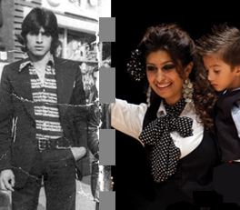

:: Sitio web de Roberto Gutiérrez durante mi etapa como diseñador gráfico en Kale Dor Kayiko
Inicio
¿Existe un pueblo gitano que no conoces?...:
I am Roberto Gutiérrez: Illustrator and graphic designer. Read more...
Editorial:
... Durante 6 años trabajé en una asociación socio-educativa gitana de Bilbao. Descubrí unos compañeros y compañeras de trabajo gitanos y gitanas a los que aprecio, quiero y respeto...

¿Existe
un pueblo gitano
que no conoces?...

Padres y madres gitanos y gitanas...
que están muy ilusionados con la educación escolar de sus hijos e hijas.
Los padres y las madres gitanos y gitanas SÍ están interesados en la educación escolar de sus hijos e hijas...
Ver...
Niñas y niños gitanas y gitanos...
que son muy queridos y apreciados por sus compañeros y compañeras de clase payos y payas.
... A recoger los premios estos niños y niñas gitanos y gitanas de Guipuzkoa acuden con el resto de sus compañeros y compañeras payos y payas.

... que van a clase y están esforzándose por estudiar.
... "Lo más que puedo hacer yo es estudiar y demostrar que por ser gitana no soy menos que nadie, ni soy menos gitana por estudiar.
Ver...

Padres y madres gitanos y gitanas...
que se sienten gitanas y gitanos y quieren que sus hijos e hijas estudien.
"Lo he escuchado muchas veces: '¿Para qué va a estudiar si no puede ser maestra?'
¡Sí puede salir maestra!"...
Ver...
Mujeres gitanas...
que se esfuerzan día a día por superarse...
"Aunque para mí es un gran esfuerzo el estudiar -no estoy acostumbrada-, lo hago con muchas ganas. Ganas, sí, de estudiar, de aprender...
Si puedo llevar esto acabo es porque tengo a mi madre en casa. Me ayuda con comidas, casa, recoger al niño del colegio, etc.
Mi etapa en Kale Dor Kayiko:
;) Las pequeñas ideas que 'cambian el mundo'...
Marcador de páginas de punto de lectura "exacto".
Una 'pequeña idea' que cambia el mundo...
;) Un poquito por lo menos...
El fin de los dejavús literarios...
¿Dónde 'exactamente' "tuviste que dejar" de leer la última vez?
Marcadores de 'líneas': Marcadores de páginas de punto de lectura exacto: Útiles, originales y económicos...
Artículos de promoción 'diferentes'. Regalos promocionales (merchandising) con un objetivo educativo y social:¿Y si no fuera tan importante que sepan de quién es el artículo de promoción?... Seguir leyendo...
Abanicos, chapas, cuadernos,
marca-páginas
(marca-líneas...)
Mochilas, carpetas, camisetas, boligrafos...
No es tan importante el "qué"..., como el "¿para qué?", el "¿por qué?", y, incluso —¿por qué no?—, seguramente, el "¿cómo?"...
Chapas...
Abanicos...
Cuadernos...
Kale Dor Kayiko
en la Azoka
En diciembre estuvimos en la Feria del libro y el disco de Durango (Bizkaia). Es la primera vez que una asociación gitana participa en la Azoka de Durango.
Fotografía (derecha): Rosario Montoya, La Reina Gitana, en la Azoka de Durango, la Feria del libro y el disco vasco.
Yo estoy a su lado, enseñándole uno de nuestros cuadernos: Felizmente escondido detrás del logotipo de la feria ;)
Herramientas didácticas
Libro para colorear de Kale Dor Kayiko
Pinta, colorea, imagina...
¿Cómo vas a ser doctora, sino lo has "imaginado" primero?...
¿Por qué los niños y las niñas gitanas no pueden tener imágenes para pintar que les ayuden a reforzar su identidad cultural?...
Publicidad:
En 2009 iniciamos en Kale Dor Kayiko una campaña de comunicación para intentar trasladar correctamente a la sociedad el origen del pueblo gitano.
Promoción de eventos:
No únicamente un certamen...
Días inolvidables, (pero no irrepetibles)...
Campaña: "Hijos/as emigrados/as de la India / (Indira Ghandi - 1983)"
El origen del Pueblo Gitano está en la India, y no en Rumanía o en Hungría, como a veces se cree. Para situar correctamente su origen, en Karipen (kale Dor Kayiko), iniciamos en diciembre de 2009 una pequeña campaña de comunicación que llevaba precisamente por título: "Hijos/as emigrado/as de la India".
Certamen KDK de Jóvenes promesas del Flamenco
Karipen es el Área de Kale dor Kayiko dirigido, entre otros objetivos, a difundir la cultura del Pueblo Gitano.
Karipen (Kale Dor Kayiko) lleva organizando dos años consecutivos el Certamen KDK de Jóvenes promesas del Flamenco en Bilbao.
En su segunda edición, el certamen se amplió también a otras modalidades como el baile. La edición del 2009 se organizó en noviembre en el Palacio Euskalduna de Bilbao.
Área de orientación laboral:

Más contenido:
Asociaciones en las que participo (o lo he hecho en algún momento)
- Piper Txuriak: Asociación de Bilbao por la construcción de una nueva masculinidad y por la igualdad de género.
- Más información: Visita su blog...
- SIM ROMI: Asociación de mujeres gitanas.
- - Próximamente más información...
- Artistas Crónicos: Asociación de Artistas de Bilbao.
[Enlace relacionado recomendado: Visita el sitio web de ZIPRIZTINTZEN: Grupo de hombres de Ermua por la igualdad].

Fotografía: Rosa Jimenez y Soraya Motos. 8 de abril de 2010. Plaza Nueva de Bilbao.
Asociación de mujeres
gitanas Sim Romi.
Más información: Sitio web de Sim Romi...
Edex, el Ayto. de Mendata, Mari José Macaya y Sim Romi premiados por La Diputación Foral de Bizkaia.
- Fotografía: Rosa Jiménez, Coordinadora de Sim Romi
¿Por qué este sitio web se llama así?:
"¿Cómo se llama ese 'payo que dibuja'?"...
Un día estabamos en la oficina y la mujer de uno de mis compañeros de trabajo me dijo: -"Sabes, Rober..., cuando no me acuerdo de tu nombre... le pregunto a mi marido:
'¿Cómo se llama... ese payo que dibuja?...'"
;) Gracias, Victoria
Fotografía: Obra de Daniel Buren modificada con Photoshop. Museo Gugghenhein Bilbao - Puente La Salve.
Fotografía "sin editar": Flickr - josu.orbe
Editorial:
¿Por qué no un Merchandising 'menos intrusivo'?...
¿Y si lo más más importante fuera que el artículo de promoción sea útil, que sea práctico y que les guste?